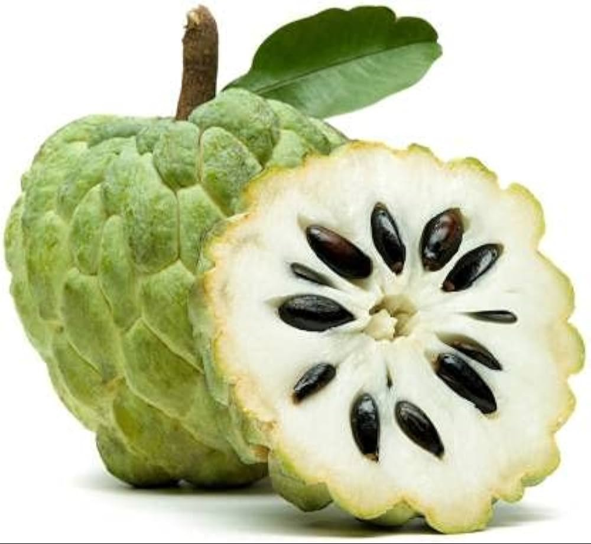

Freshness You Can Trust

Custard Apple, also known as Sugar Apple or Sitaphal, is a sweet, creamy, and highly nutritious tropical fruit. It is rich in vitamins C and B6, dietary fiber, potassium, magnesium, and antioxidants. Custard Apple helps improve digestion, boosts the immune system, supports heart health, strengthens bones, and provides natural energy. Its soft, creamy flesh makes it a delicious and healthy fruit that can be enjoyed fresh, in smoothies, desserts, or milkshakes.